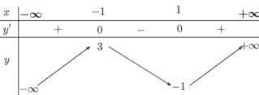
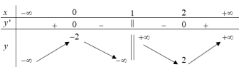
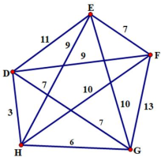
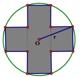
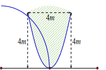

ĐỀ THI TOÁN - ĐỀ SỐ 36 HOT
Phần I: Trắc Nghiệm Nhiều Lựa Chọn
Tóm tắt kiến thức: Cực trị của hàm số
Hàm số \( f(x) \) đạt cực đại tại \( x_0 \) nếu \( f'(x_0) = 0 \) và bảng biến thiên cho thấy \( f(x) \) đổi từ tăng sang giảm tại \( x_0 \).
Câu 1:
Cho hàm số \( f(x) \) xác định trên \( \mathbb{R} \) và có bảng biến thiên như sau:

Hàm số \( y = f(x) \) đạt cực đại tại điểm nào?
Chọn đáp án:
Lời giải:
Từ bảng biến thiên, hàm số \( y = f(x) \) đạt cực đại tại điểm \( x = -1 \).
Đáp án: B.
Tóm tắt kiến thức: Tiệm cận xiên
Đường tiệm cận xiên của hàm số \( y = f(x) \) có dạng \( y = mx + n \), với \( m = \lim_{x \to \infty} \frac{f(x)}{x} \), \( n = \lim_{x \to \infty} (f(x) - mx) \).
Câu 2:
Đường tiệm cận xiên của đồ thị hàm số \( y = \frac{x^2 - 3x + 4}{x + 2} \) là đường thẳng nào?
Chọn đáp án:
Lời giải:
Ta có \( y = \frac{x^2 - 3x + 4}{x + 2} = x - 5 + \frac{14}{x + 2} \).
\( \lim_{x \to \infty} (y - (x - 5)) = \lim_{x \to \infty} \frac{14}{x + 2} = 0 \).
Vậy tiệm cận xiên của đồ thị là đường thẳng \( y = x - 5 \).
Đáp án: C.
Tóm tắt kiến thức: Phép toán vector
Cho hai vector \( \vec{a} = (x_1; y_1; z_1) \) và \( \vec{b} = (x_2; y_2; z_2) \), thì \( \vec{a} - \vec{b} = (x_1 - x_2; y_1 - y_2; z_1 - z_2) \).
Câu 3:
Trong không gian \( Oxyz \), cho \( \vec{a} = (2; 3; 2) \) và \( \vec{b} = (1; 1; -1) \). Vector \( \vec{a} - \vec{b} \) có tọa độ là:
Chọn đáp án:
Lời giải:
\( \vec{a} - \vec{b} = (2 - 1; 3 - 1; 2 - (-1)) = (1; 2; 3) \).
Đáp án: D.
Tóm tắt kiến thức: Mặt phẳng song song
Mặt phẳng đi qua điểm \( M(x_0; y_0; z_0) \) và song song với mặt phẳng \( ax + by + cz + d = 0 \) có phương trình \( ax + by + cz + k = 0 \), với \( k \) được xác định bằng cách thay \( M \) vào.
Câu 4:
Trong không gian \( Oxyz \), cho điểm \( M(2; -1; 4) \) và mặt phẳng \( (P): 3x - 2y + z + 1 = 0 \). Phương trình của mặt phẳng đi qua \( M \) và song song với mặt phẳng \( (P) \) là:
Chọn đáp án:
Lời giải:
Phương trình mặt phẳng đi qua \( M(2; -1; 4) \) và song song với \( (P) \) là \( 3x - 2y + z + k = 0 \).
Thay \( M \): \( 3 \cdot 2 - 2 \cdot (-1) + 4 + k = 0 \Rightarrow 6 + 2 + 4 + k = 0 \Rightarrow k = -12 \).
Vậy phương trình là \( 3x - 2y + z - 12 = 0 \).
Đáp án: D.
Tóm tắt kiến thức: Phương sai mẫu ghép nhóm
Phương sai mẫu ghép nhóm: \( S^2 = \frac{1}{n} \sum n_i (x_i - \bar{x})^2 \), với \( \bar{x} = \frac{\sum n_i x_i}{\sum n_i} \), \( x_i \) là giá trị đại diện, \( n_i \) là tần số.
Câu 5:
Điều tra về mức lương khởi điểm (đơn vị: triệu đồng) của 20 công nhân, ta có bảng số liệu sau:

| Mức lương | \([5; 6)\) | \([6; 7)\) | \([7; 8)\) | \([8; 9)\) | \([9; 10)\) |
|---|---|---|---|---|---|
| Tần số | 4 | 5 | 5 | 4 | 2 |
Chọn đáp án:
Lời giải:
Giá trị đại diện: \( [5; 6) \to 5,5 \), \( [6; 7) \to 6,5 \), \( [7; 8) \to 7,5 \), \( [8; 9) \to 8,5 \), \( [9; 10) \to 9,5 \).
Số trung bình: \( \bar{x} = \frac{4 \cdot 5,5 + 5 \cdot 6,5 + 5 \cdot 7,5 + 4 \cdot 8,5 + 2 \cdot 9,5}{20} = 7,25 \).
Phương sai: \( S^2 = \frac{4 \cdot (5,5 - 7,25)^2 + 5 \cdot (6,5 - 7,25)^2 + 5 \cdot (7,5 - 7,25)^2 + 4 \cdot (8,5 - 7,25)^2 + 2 \cdot (9,5 - 7,25)^2}{20} = 1,59 \).
Đáp án: D.
Tóm tắt kiến thức: Xác suất có điều kiện
Xác suất có điều kiện: \( P(B|A) = \frac{P(A \cap B)}{P(A)} \). Với biến cố \( A \): lần 1 bốc bi xanh, \( B \): lần 2 bốc bi đỏ, ta tính \( P(B|A) \).
Câu 6:
Một hộp chứa 8 bi xanh, 2 bi đỏ. Lần lượt bốc từng bi. Giả sử lần đầu tiên bốc được bi xanh. Xác suất lần thứ 2 bốc được bi đỏ là bao nhiêu?
Chọn đáp án:
Lời giải:
Gọi \( A \): lần 1 bốc được bi xanh, \( B \): lần 2 bốc được bi đỏ.
\( P(A) = \frac{8}{10} = \frac{4}{5} \), \( P(A \cap B) = \frac{8}{10} \cdot \frac{2}{9} = \frac{8}{45} \).
\( P(B|A) = \frac{P(A \cap B)}{P(A)} = \frac{\frac{8}{45}}{\frac{4}{5}} = \frac{2}{9} \).
Đáp án: B.
Tóm tắt kiến thức: Nguyên hàm
Nguyên hàm của \( f(x) = 3x^2 + 2x - 1 \) là \( F(x) = x^3 + x^2 - x + C \). Hàm \( F(x) \) không là nguyên hàm nếu đạo hàm \( F'(x) \neq f(x) \).
Câu 7:
Hàm số nào sau đây không là một nguyên hàm của hàm số \( f(x) = 3x^2 + 2x - 1 \)?
Chọn đáp án:
Lời giải:
Nguyên hàm: \( F(x) = \int (3x^2 + 2x - 1) \, dx = x^3 + x^2 - x + C \).
Kiểm tra:
- \( F(x) = x^3 + x^2 - 1 \): \( F'(x) = 3x^2 + 2x \neq f(x) \).
- Các hàm còn lại có \( F'(x) = 3x^2 + 2x - 1 \).
Đáp án: A.
Tóm tắt kiến thức: Hình bình hành trong không gian
Trong hình bình hành \( MNPQ \), vector \( \overrightarrow{MN} = \overrightarrow{QP} \). Tọa độ điểm \( Q \) được tìm bằng cách giải hệ phương trình từ đẳng thức vector.
Câu 8:
Trong không gian tọa độ \( Oxyz \), cho ba điểm \( M(1; 1; 1) \), \( N(2; 3; 4) \), \( P(7; 7; 5) \). Tìm tọa độ điểm \( Q \) để tứ giác \( MNPQ \) là hình bình hành.
Chọn đáp án:
Lời giải:
\( \overrightarrow{MN} = (2 - 1; 3 - 1; 4 - 1) = (1; 2; 3) \), \( \overrightarrow{QP} = (7 - x_Q; 7 - y_Q; 5 - z_Q) \).
\( MNPQ \) là hình bình hành \( \Rightarrow \overrightarrow{MN} = \overrightarrow{QP} \Rightarrow \begin{cases} 1 = 7 - x_Q \\ 2 = 7 - y_Q \\ 3 = 5 - z_Q \end{cases} \Rightarrow \begin{cases} x_Q = 6 \\ y_Q = 5 \\ z_Q = 2 \end{cases} \).
Vậy \( Q(6; 5; 2) \).
Đáp án: A.
Tóm tắt kiến thức: Cấp số cộng
Cấp số cộng có công sai \( d \), số hạng \( u_n = u_{n-1} + d \).
Câu 9:
Cho cấp số cộng \( (u_n) \) với công sai \( d \), khẳng định nào sau đây đúng?
Chọn đáp án:
Lời giải:
Trong cấp số cộng, \( u_n = u_{n-1} + d \).
Đáp án: B.
Tóm tắt kiến thức: Bất phương trình logarit
Bất phương trình \( \log_a (x) < b \) có nghiệm là \( 0 < x < a^b \), với điều kiện \( x > 0 \) và \( a > 0 \), \( a \neq 1 \).
Câu 10:
Tập nghiệm \( S \) của bất phương trình \( \log_2 (x - 1) < 3 \) là:
Chọn đáp án:
Lời giải:
\( \log_2 (x - 1) < 3 \Rightarrow 0 < x - 1 < 2^3 \Rightarrow 1 < x < 9 \).
Vậy \( S = (1; 9) \).
Đáp án: D.
Tóm tắt kiến thức: Thể tích khối chóp
Thể tích khối chóp: \( V = \frac{1}{3} S_{\text{đáy}} \cdot h \), với \( S_{\text{đáy}} \) là diện tích đáy, \( h \) là chiều cao.
Câu 11:
Cho hình chóp \( S.ABCD \) có đáy \( ABCD \) là hình thoi cạnh \( a\sqrt{3} \), \( \angle BAD = 120^\circ \), cạnh bên \( SA \) vuông góc với đáy. Biết góc giữa mặt phẳng \( (SBC) \) và đáy bằng \( 60^\circ \). Thể tích khối chóp \( S.ABCD \) theo \( a \) là:
Chọn đáp án:
Lời giải:
Gọi \( M \) là trung điểm \( BC \), tam giác \( ABC \) đều nên \( AM \perp BC \).
\( \triangle SAB = \triangle SAC \Rightarrow SB = SC \Rightarrow SM \perp BC \).
Góc giữa \( (SBC) \) và \( (ABCD) \): \( \angle SMA = 60^\circ \).
Trong \( \triangle SAM \): \( SA = AM \cdot \tan \angle SMA = \frac{3a\sqrt{3}}{2} \).
Diện tích đáy: \( S_{ABCD} = 2 \cdot S_{ABC} = 2 \cdot (a\sqrt{3})^2 \cdot \frac{\sqrt{3}}{4} = \frac{3\sqrt{3}a^2}{2} \).
Thể tích: \( V = \frac{1}{3} \cdot S_{ABCD} \cdot SA = \frac{1}{3} \cdot \frac{3\sqrt{3}a^2}{2} \cdot \frac{3a\sqrt{3}}{2} = \frac{9a^3}{4} \).
Đáp án: D.
Tóm tắt kiến thức: Mặt cầu
Phương trình mặt cầu \( (x - a)^2 + (y - b)^2 + (z - c)^2 = R^2 \) có tâm \( I(a; b; c) \), bán kính \( R \).
Câu 12:
Cho mặt cầu \( (S): (x + 1)^2 + (y - 2)^2 + (z - 1)^2 = 9 \). Tọa độ tâm \( I \) và bán kính \( R \) của \( (S) \) là:
Chọn đáp án:
Lời giải:
Mặt cầu \( (x + 1)^2 + (y - 2)^2 + (z - 1)^2 = 9 \) có tâm \( I(-1; 2; 1) \), bán kính \( R = \sqrt{9} = 3 \).
Đáp án: A.
Phần II: Trắc Nghiệm Đúng/Sai
Tóm tắt kiến thức: Tính đạo hàm và tiệm cận
Đạo hàm của \( y = \frac{x^2 - 2x + 2}{x - 1} \) và tiệm cận xiên được tính bằng cách phân tích hàm số. Bảng biến thiên xác định tính đơn điệu và cực trị.
Câu 13:
Cho hàm số \( y = \frac{x^2 - 2x + 2}{x - 1} \). Xét các phát biểu sau:

Chọn đáp án cho từng phát biểu:
a)
b)
c)
d)
Lời giải:
a) Sai. \( y = \frac{x^2 - 2x + 2}{x - 1} = x - 1 + \frac{1}{x - 1} \), đạo hàm \( y' = 1 - \frac{1}{(x - 1)^2} \neq \frac{x^2 + 2x}{(x - 1)^2} \).
b) Đúng. \( \lim_{x \to \infty} (y - (x - 1)) = \lim_{x \to \infty} \frac{1}{x - 1} = 0 \), tiệm cận xiên là \( y = x - 1 \).
c) Đúng. Bảng biến thiên đúng với \( y' = 0 \) tại \( x = 0, x = 2 \).
d) Sai. Hai điểm cực trị: \( A(0; -2) \), \( B(2; 2) \). Phương trình đường thẳng \( AB \): \( y = 2x - 2 \). Giao với \( Ox \): \( C(1; 0) \). Diện tích tam giác \( OAC \): \( S = \frac{1}{2} \cdot 2 \cdot 1 = 1 \neq 2 \).
Đáp án: a) Sai, b) Đúng, c) Đúng, d) Sai.
Tóm tắt kiến thức: Đạo hàm hàm hợp
Đạo hàm của hàm hợp \( y = f(g(x)) \): \( y' = f'(g(x)) \cdot g'(x) \). Tốc độ thay đổi trung bình: \( \frac{f(t_2) - f(t_1)}{t_2 - t_1} \).
Câu 14:
Tốc độ trao đổi chất cơ bản của sinh vật tăng hoặc giảm tùy thuộc vào hoạt động. Sau khi hấp thụ chất dinh dưỡng, tốc độ trao đổi chất tăng đột biến, sau đó giảm dần. Xét các phát biểu sau:
Chọn đáp án cho từng phát biểu:
a)
b)
c)
d)
Lời giải:
Giả sử \( M(t) = 0,01t \cdot e^{-0,1t^2} + 5 \).
a) Sai. \( M'(t) = 0,01e^{-0,1t^2} + 0,01t \cdot e^{-0,1t^2} \cdot (-0,2t) \). Tại \( t = 2 \): \( M'(2) \neq 0,01 \cdot 2 \cdot (-0,1 \cdot 2^2) \cdot e^{-0,1 \cdot 2^2} \).
b) Đúng. Tốc độ thay đổi trung bình: \( \frac{M(12) - M(6)}{12 - 6} = \frac{5,120 - (0,01 \cdot 6 \cdot e^{-0,1 \cdot 6^2} + 5)}{6} \approx 32,77 \, \text{J/h} \).
c) Sai. \( M'(t) = 0 \Rightarrow t = \sqrt{5} \approx 2,24 \neq 5 \).
d) Đúng. \( \lim_{t \to \infty} M(t) = 5 \), tiệm cận ngang là \( y = 5 \).
Đáp án: a) Sai, b) Đúng, c) Sai, d) Đúng.
Tóm tắt kiến thức: Xác suất có điều kiện
Xác suất có điều kiện: \( P(A|B) = \frac{P(A \cap B)}{P(B)} \). Xác suất toàn phần: \( P(B) = P(A)P(B|A) + P(\bar{A})P(B|\bar{A}) \).
Câu 15:
Có hai đội thi đấu môn bắn cung. Đội I có 8 vận động viên, đội II có 10 vận động viên. Xác suất đạt huy chương vàng của mỗi vận động viên đội I và đội II tương ứng là 0,7 và 0,8. Chọn ngẫu nhiên một vận động viên. Xét các phát biểu sau:
Chọn đáp án cho từng phát biểu:
a)
b)
c)
d)
Lời giải:
Gọi \( A \): vận động viên thuộc đội I, \( \bar{A} \): thuộc đội II, \( B \): đạt huy chương vàng.
a) Đúng. \( P(A) = \frac{8}{18} = \frac{4}{9} \).
b) Đúng. \( P(B) = P(A)P(B|A) + P(\bar{A})P(B|\bar{A}) = \frac{4}{9} \cdot 0,7 + \frac{5}{9} \cdot 0,8 = \frac{34}{45} \).
c) Sai. \( P(\bar{A}|B) = \frac{P(\bar{A})P(B|\bar{A})}{P(B)} = \frac{\frac{5}{9} \cdot 0,8}{\frac{34}{45}} = \frac{10}{17} \approx 0,588 \neq 0,68 \).
d) Đúng. \( P(A|B) = \frac{P(A)P(B|A)}{P(B)} = \frac{\frac{4}{9} \cdot 0,7}{\frac{34}{45}} = \frac{7}{17} \approx 0,412 < \frac{1}{2} \).
Đáp án: a) Đúng, b) Đúng, c) Sai, d) Đúng.
Tóm tắt kiến thức: Mặt cầu và khoảng cách
Phương trình mặt cầu tâm \( I(a; b; c) \), bán kính \( R \): \( (x - a)^2 + (y - b)^2 + (z - c)^2 = R^2 \). Khoảng cách từ điểm \( M \) đến tâm \( I \): \( IM = \sqrt{(x_M - a)^2 + (y_M - b)^2 + (z_M - c)^2} \).
Câu 16:
Trong không gian với hệ trục tọa độ \( Oxyz \) (đơn vị trên mỗi trục là km), một trạm phát sóng điện thoại của Viettel được đặt ở vị trí \( I(1; 3; 5) \) và có bán kính phủ sóng là 4 km. Xét các phát biểu sau:
Chọn đáp án cho từng phát biểu:
a)
b)
c)
d)
Lời giải:
a) Đúng. Phương trình mặt cầu: \( (x - 1)^2 + (y - 3)^2 + (z - 5)^2 = 4^2 = 16 \).
b) Sai. \( IM = \sqrt{(-1 - 1)^2 + (0 - 3)^2 + (0 - 5)^2} = \sqrt{38} > 4 \), \( M \) ngoài mặt cầu.
c) Đúng. \( IN = \sqrt{(1 - 1)^2 + (2 - 3)^2 + (2 - 5)^2} = \sqrt{10} < 4 \), \( N \) trong mặt cầu.
d) Sai. Phương trình đường \( MN \): \( \begin{cases} x = -1 + t \\ y = t \\ z = t \end{cases} \). Giao với mặt cầu: \( 3t^2 - 20t + 22 = 0 \Rightarrow t = \frac{10 \pm \sqrt{34}}{3} \). Với \( t = \frac{10 - \sqrt{34}}{3} \), \( MA \approx 2,41 \, \text{km} \neq 3 \, \text{km} \).
Đáp án: a) Đúng, b) Sai, c) Đúng, d) Sai.
Phần III: Trắc Nghiệm Trả Lời Ngắn
Tóm tắt kiến thức: Góc giữa đường thẳng và mặt phẳng
Góc giữa đường thẳng và mặt phẳng là góc giữa đường thẳng và hình chiếu của nó trên mặt phẳng. Sử dụng vector pháp tuyến và vector chỉ phương để tính.
Câu 17:
Cho hình chóp tứ giác đều \( S.ABCD \) có cạnh đáy bằng \( a \), cạnh bên bằng \( 2a\sqrt{2} \). Gọi \( M \) là trung điểm của \( SA \). Góc giữa đường thẳng \( BM \) với mặt phẳng \( (ABCD) \) bằng bao nhiêu độ?
Nhập đáp án:
Lời giải:
Gọi \( O \) là giao điểm \( AC \) và \( BD \), \( I \) là trung điểm \( AO \).
Vì \( S.ABCD \) là hình chóp tứ giác đều, \( SO \perp (ABCD) \).
\( MI \parallel SO \Rightarrow MI \perp (ABCD) \Rightarrow \angle (BM, (ABCD)) = \angle MBI \).
Trong \( \triangle SAO \): \( SO = \sqrt{SA^2 - OA^2} = \sqrt{(2a\sqrt{2})^2 - \left(\frac{a\sqrt{2}}{2}\right)^2} = \frac{a\sqrt{30}}{2} \Rightarrow MI = \frac{a\sqrt{30}}{4} \).
Trong \( \triangle BIO \): \( BI = \sqrt{OB^2 + OI^2} = \sqrt{\left(\frac{a\sqrt{2}}{2}\right)^2 + \left(\frac{a\sqrt{2}}{4}\right)^2} = \frac{a\sqrt{10}}{4} \).
\( \tan \angle MBI = \frac{MI}{BI} = \frac{\frac{a\sqrt{30}}{4}}{\frac{a\sqrt{10}}{4}} = \sqrt{3} \Rightarrow \angle MBI = 60^\circ \).
Đáp án: 60.
Tóm tắt kiến thức: Bài toán đường đi ngắn nhất
Áp dụng thuật toán láng giềng gần nhất để tìm đường đi ngắn nhất qua các điểm và quay lại điểm xuất phát.
Câu 18:
Từ kho \( D \), xe bưu chính đến lấy thư từ các hộp thư tại \( E, F, G, H \) và quay lại kho. Sơ đồ hiển thị thời gian xe di chuyển giữa các hộp thư (đơn vị: phút):

Thời gian ngắn nhất để xe bưu chính thực hiện điều đó là bao nhiêu phút?
Nhập đáp án:
Lời giải:
Áp dụng thuật toán láng giềng gần nhất, ưu tiên di chuyển đến hộp thư gần nhất chưa đi qua.
Quãng đường: \( D \to H \to G \to E \to F \to D \).
Thời gian: 35 phút.
Đáp án: 35.
Tóm tắt kiến thức: Tối ưu hóa diện tích
Tìm giá trị lớn nhất của hàm diện tích bằng cách lấy đạo hàm và tìm điểm cực trị.
Câu 19:
Hai hình chữ nhật bằng nhau, nội tiếp trong đường tròn tâm \( O \) bán kính \( r = 1 \, \text{cm} \) tạo thành một hình chữ thập đối xứng:

Diện tích lớn nhất của hình chữ thập là bao nhiêu \( \text{cm}^2 \)? (Kết quả làm tròn đến hàng phần trăm).
Nhập đáp án:
Lời giải:
Gọi \( AD = x \, \text{cm} \), \( x > 0 \). Trong \( \triangle ABD \): \( AB = \sqrt{BD^2 - AD^2} = \sqrt{4 - x^2} \).
Diện tích chữ thập: \( S(x) = 2 \cdot AD \cdot AB - x^2 = 2x \sqrt{4 - x^2} - x^2 \), \( x \in (0; 2] \).
Đạo hàm: \( S'(x) = 2\sqrt{4 - x^2} - \frac{2x^2}{\sqrt{4 - x^2}} - 2x = 0 \Rightarrow 4 - 2x^2 = x\sqrt{4 - x^2} \).
Bình phương: \( (4 - 2x^2)^2 = x^2 (4 - x^2) \Rightarrow 5x^4 - 20x^2 + 16 = 0 \Rightarrow x^2 = 2 \pm \frac{2}{\sqrt{5}} \).
Tại \( x = \sqrt{2 - \frac{2}{\sqrt{5}}} \), \( S \approx 2,47 \).
Đáp án: 2,47.
Tóm tắt kiến thức: Phương trình tham số
Phương trình tham số đường thẳng qua điểm \( A \) với vector chỉ phương \( \vec{u} \). Khoảng cách được tính dựa trên vận tốc và thời gian.
Câu 20:
Trong không gian \( Oxyz \), mặt cabin cáp treo ở Bà Nà Hill xuất phát từ điểm \( A(-2; 1; 5) \) và chuyển động đều theo đường cáp có vector chỉ phương \( \vec{u} = (0; -2; 6) \) với tốc độ 4 m/s (đơn vị trên mỗi trục là mét). Giả sử sau 5 s kể từ lúc xuất phát, cabin đến điểm \( M \). Gọi tọa độ \( M(a; b; c) \). Tính \( a + 3b + c \).
Nhập đáp án:
Lời giải:
Phương trình đường cáp: \( \begin{cases} x = -2 \\ y = 1 - 2k \\ z = 5 + 6k \end{cases} \).
Tốc độ 4 m/s, sau 5 s: \( AM = 4 \cdot 5 = 20 \, \text{m} \).
\( M(-2; 1 - 2k; 5 + 6k) \), \( \overrightarrow{AM} = (0; -2k; 6k) \).
\( AM = \sqrt{4k^2 + 36k^2} = 20 \Rightarrow 40k^2 = 400 \Rightarrow k = \sqrt{10} \).
Tọa độ \( M(-2; 1 - 2\sqrt{10}; 5 + 6\sqrt{10}) \).
\( a + 3b + c = -2 + 3(1 - 2\sqrt{10}) + (5 + 6\sqrt{10}) = 6 \).
Đáp án: 6.
Tóm tắt kiến thức: Tích phân và diện tích
Diện tích giới hạn bởi các đường cong được tính bằng tích phân. Tổng chi phí được tính dựa trên diện tích và đơn giá.
Câu 21:
Một khuôn viên dạng nửa hình tròn, trên đó người thiết kế phần để trồng hoa có dạng cánh hoa hình parabol có đỉnh trùng với tâm và trục đối xứng vuông góc với đường kính của nửa hình tròn, hai đầu mút của cánh hoa nằm trên nửa đường tròn (phần tô màu) và cách nhau 4 m:

Phần còn lại (phần không tô màu) trồng cỏ Nhật Bản. Chi phí trồng hoa và cỏ Nhật Bản lần lượt là 150000 đồng/m\(^2\) và 100000 đồng/m\(^2\). Hỏi cần bao nhiêu tiền để trồng hoa và cỏ Nhật Bản trong khuôn viên (làm tròn đến hàng phần trăm, đơn vị triệu đồng)?
Nhập đáp án:
Lời giải:
Bán kính nửa đường tròn: \( R = \sqrt{4^2 + 2^2} = 2\sqrt{5} \).
Phương trình nửa đường tròn: \( x^2 + y^2 = 20, y \geq 0 \Rightarrow y = \sqrt{20 - x^2} \).
Parabol: \( y = x^2 \) (đi qua \( (2; 4) \)).
Diện tích phần tô màu: \( S_1 = \int_{-2}^{2} (\sqrt{20 - x^2} - x^2) \, dx \approx 11,94 \, \text{m}^2 \).
Diện tích phần không tô: \( S_2 = \frac{1}{2} \cdot \pi \cdot (2\sqrt{5})^2 - S_1 \approx 10\pi - 11,94 \, \text{m}^2 \).
Chi phí: \( 150000 \cdot 11,94 + 100000 \cdot (10\pi - 11,94) \approx 3,74 \, \text{triệu đồng} \).
Đáp án: 3,74.
Tóm tắt kiến thức: Xác suất Bayes
Xác suất Bayes: \( P(A|B) = \frac{P(A)P(B|A)}{P(A)P(B|A) + P(\bar{A})P(B|\bar{A})} \).
Câu 22:
Một căn bệnh có 1% dân số mắc phải. Một phương pháp chẩn đoán có tỷ lệ chính xác 99%. Với người bị bệnh, phương pháp này đưa ra kết quả dương tính trong 99% trường hợp. Với người không mắc bệnh, phương pháp cũng chẩn đoán đúng 99 trong 100 trường hợp. Nếu một người kiểm tra và kết quả là dương tính (bị bệnh), xác suất để người đó thực sự bị bệnh là bao nhiêu?
Nhập đáp án:
Lời giải:
Gọi \( A \): người mắc bệnh, \( B \): kết quả dương tính.
\( P(A) = 0,01 \), \( P(\bar{A}) = 0,99 \), \( P(B|A) = 0,99 \), \( P(B|\bar{A}) = 0,01 \).
\( P(A|B) = \frac{P(A)P(B|A)}{P(A)P(B|A) + P(\bar{A})P(B|\bar{A})} = \frac{0,01 \cdot 0,99}{0,01 \cdot 0,99 + 0,99 \cdot 0,01} = 0,5 \).
Đáp án: 0,5.